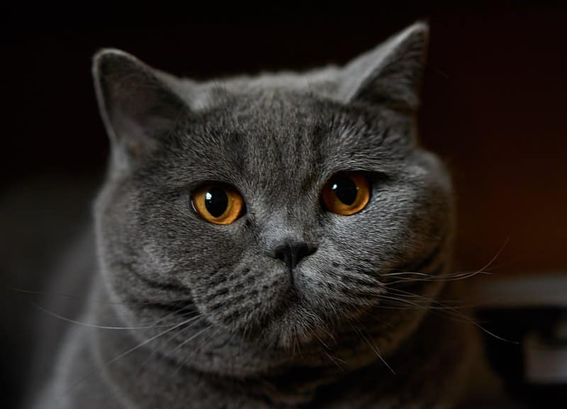
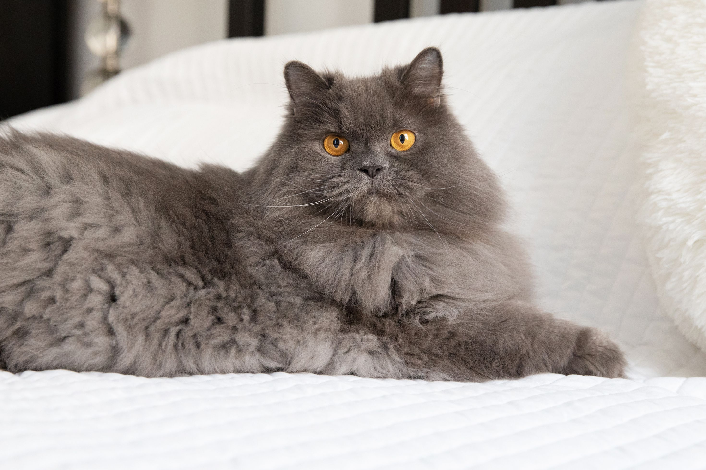
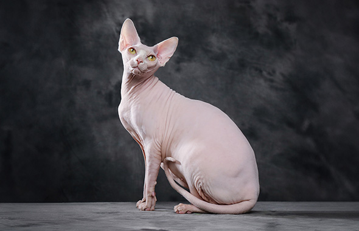
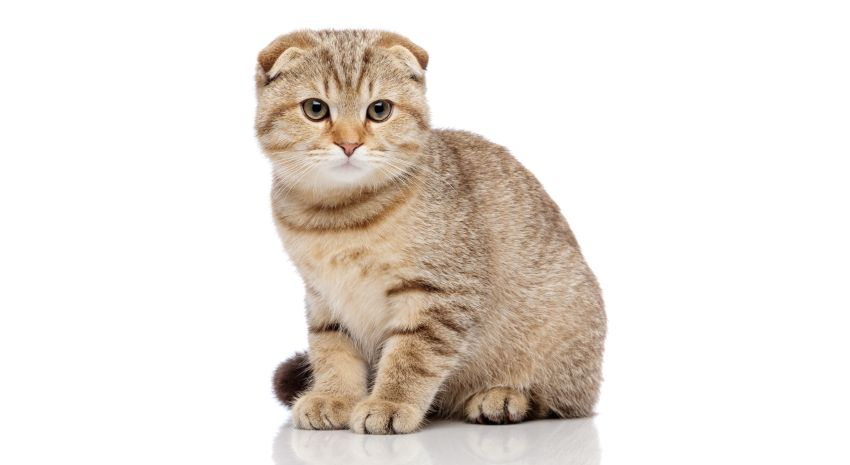
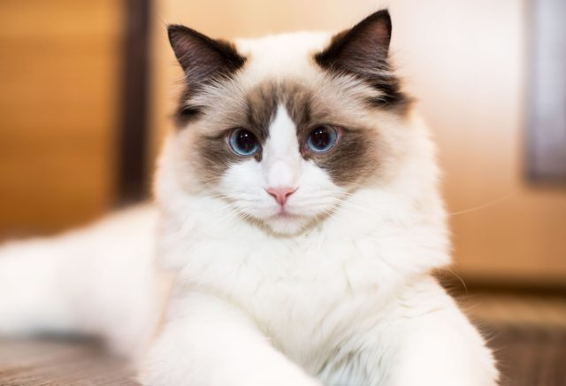
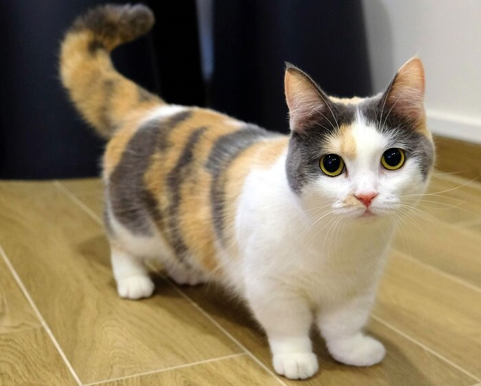

Different Cat Breeds
Siamese

Siamese cats are a popular breed known for their striking appearance and vocal personalities. They have sleek, slender bodies, large ears, and almond-shaped blue eyes. Their short coat typically features a light-colored body with darker "points" on the ears, face, paws, and tail. Siamese cats are highly social, intelligent, and affectionate, often forming strong bonds with their owners. They are also known for being vocal and expressing themselves through distinctive meows
British Shorthair
British Shorthair cats are a sturdy, well-built breed known for their round faces, large eyes, and dense, plush coats. They often have a calm and laid-back temperament, making them ideal companions. The most recognized color is the "British Blue," but they come in various colors and patterns. British Shorthairs are affectionate but not overly clingy, enjoying quiet, relaxed environments. Their strong, muscular bodies and easygoing personalities make them a favorite among cat lovers.
Maine Coon

Maine Coon cats are one of the largest domestic cat breeds, known for their long, thick fur and tufted ears. They have muscular bodies, bushy tails, and expressive eyes, often giving them a wild, majestic appearance. Despite their size, Maine Coons are friendly, gentle, and affectionate, earning them the nickname "gentle giants." They are also playful, intelligent, and can get along well with other pets. Their coats are weather-resistant, making them well-suited for cold climates.
Persian
Persian cats are known for their long, luxurious coats and distinctive flat, round faces with large, expressive eyes. They have a calm, sweet, and gentle temperament, often enjoying a quiet, relaxed lifestyle. Persian cats are affectionate but can be a bit reserved, making them ideal for peaceful households. Their coats come in a wide variety of colors and patterns, requiring regular grooming to maintain their beauty. Persians are one of the most popular and recognizable cat breeds due to their elegant appearance and laid-back personality.
Sphynx
Sphynx cats are a unique breed known for their hairless appearance, wrinkled skin, and large, bat-like ears. Despite their lack of fur, they have soft, warm skin and can come in various colors and patterns. Sphynx cats are affectionate, playful, and highly social, often seeking attention and warmth from their owners. They are energetic and enjoy being the center of attention, making them great companions. Due to their hairless nature, they require regular bathing to manage skin oils, and they tend to be sensitive to cold, often seeking out cozy spots to stay warm.
Scottish Fold
Scottish Fold cats are easily recognized by their unique folded ears, which give them an owl-like appearance. They have round faces, large eyes, and a medium, sturdy body. Their coats can be short or long and come in various colors and patterns. Scottish Folds are known for their sweet, affectionate, and calm temperament, often forming strong bonds with their owners. They are playful yet gentle, making them ideal companions for families. Their signature ear fold is the result of a natural genetic mutation, which contributes to their distinctive look.
Ragdoll
Ragdoll cats are known for their striking blue eyes, soft semi-long coats, and large, muscular bodies. They are named "Ragdoll" because of their tendency to go limp and relaxed when picked up. Ragdolls have a calm, affectionate, and gentle nature, often following their owners around and enjoying being held or cuddled. Their coats are typically light-colored with darker points on the face, ears, paws, and tail, similar to Siamese cats. Ragdolls are friendly, easygoing, and good with children and other pets, making them excellent companions for families.
Munchkin
Munchkin cats are a unique breed known for their short legs, the result of a natural genetic mutation, giving them a distinct, low-to-the-ground appearance. Despite their short stature, they are agile and playful, often displaying kitten-like energy well into adulthood. Munchkins have a variety of coat lengths and colors, and their personalities are typically friendly, outgoing, and affectionate. They enjoy interacting with people and other animals, making them great companions. Their short legs do not hinder their ability to run or jump, and they are known for their curious and adventurous nature.